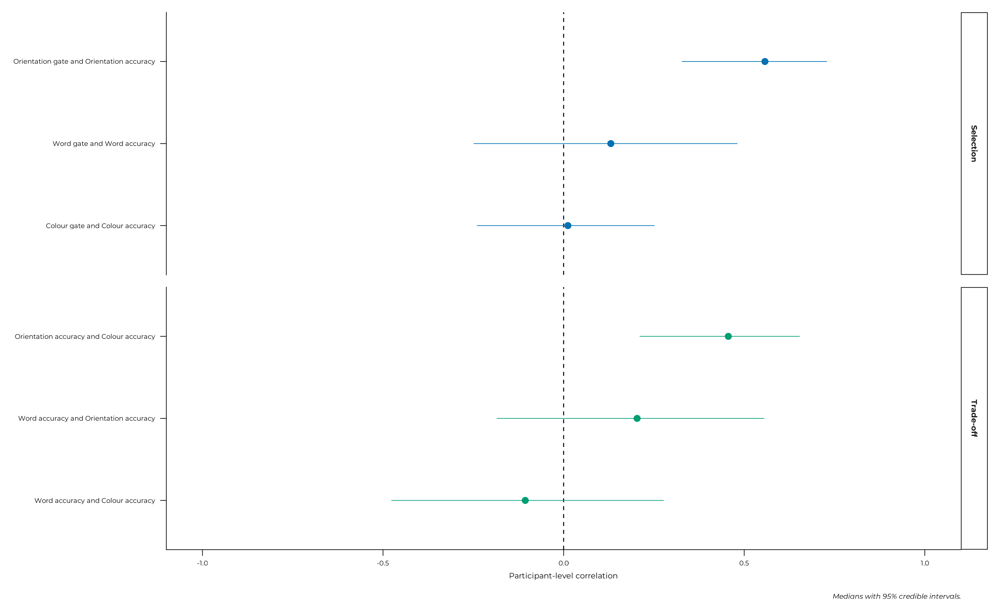

The joint model: propensity and accuracy together
Source:vignettes/articles/joint-model.Rmd
joint-model.RmdThe composition page reports this study’s primary result, and it computes it from responded items only. Whether that conditioning was innocent cannot be checked from inside a responders-only analysis, because the information needed to check it has been removed.
This model checks it, and answers two questions of its own that no other page can reach: whether willingness to report is itself a stable individual trait, and whether doing well on one feature costs another between people.
Six responses. Three gates, one per feature, for whether it was reported at all. Three accuracies, for how well it was reported when it was. All six share a participant-level correlation matrix, and those fifteen correlations are the point.
v1 <- get_data("v1") |>
dplyr::filter(grepl("^expe_block", expe_phase))
participant_info <- v1 |>
dplyr::summarise(
vviq = dplyr::first(vviq_total_score),
parity_rate = (sum(responded_parity_1) + sum(responded_parity_2)) /
(2 * dplyr::n()),
.by = id
)
model_data <- v1 |>
dplyr::left_join(participant_info, by = "id") |>
dplyr::filter(!is.na(vviq)) |>
dplyr::mutate(
complete_aphant = factor(
dplyr::if_else(vviq == 16, "floor", "above_floor"),
levels = c("above_floor", "floor")
),
score_color = squeeze_boundaries(score_color, n = sum(responded_color))
)
joint_model <- fit_brms_model(
formula = joint_formula(),
data = model_data,
prior = joint_priors(),
file = system.file("models", "joint-full.rds", package = pkg),
file_refit = refit
)1. The sample is larger here, deliberately
engaged <- engaged_ids(v1)
# `model_data` already excludes participants with no vividness score, so
# this is "clears the thresholds AND has a VVIQ" -- the sample the
# composition and performance pages model.
comparison_sample <- dplyr::n_distinct(
dplyr::filter(model_data, id %in% engaged)$id
)
# The two simpler models. Loaded here rather than in section 6 because
# both sections read from them, and a number quoted four sections before
# the object that produces it is a transcription waiting to go stale.
# Both were fitted on the engaged sample, not on this page's larger one,
# so the frame is rebuilt to match.
performance_data <- dplyr::filter(model_data, id %in% engaged)
performance_model <- fit_brms_model(
formula = performance_formula(),
data = performance_data,
prior = c(
do.call(c, lapply(
c("scoreword", "scoreangle", "scorecolor"),
response_priors, terms = c("vviq", "complete_aphant", "parity_rate")
)),
brms::prior("lkj(2)", class = "cor")
),
file = system.file("models", "perf-c-prime.rds", package = pkg),
file_refit = refit
)
orientation_only <- fit_brms_model(
formula =
brms::bf(responded_angle ~ vviq + complete_aphant + (1 | p | id),
family = brms::bernoulli()) +
brms::bf(score_angle | subset(responded_angle) ~
vviq + complete_aphant + parity_rate + (1 | p | id),
family = brms::Beta()) +
brms::set_rescor(FALSE),
data = performance_data,
prior = c(
response_priors("respondedangle", terms = c("vviq", "complete_aphant")),
response_priors("scoreangle",
terms = c("vviq", "complete_aphant", "parity_rate")),
brms::prior("lkj(2)", class = "cor")
),
save_pars = brms::save_pars(group = FALSE),
file = system.file("models", "perf-joint-orientation.rds", package = pkg),
file_refit = refit
)
offset_of <- function(model, response) {
brms::fixef(model)[paste0(response, "_complete_aphantfloor"), "Estimate"]
}
correlation_of <- function(model, a, b) {
pairs <- posterior_correlations(brms::as_draws_df(model), lkj = NULL)
match <- pairs$response_a %in% c(a, b) & pairs$response_b %in% c(a, b)
pairs$median[match]
}
selection_replication <- c(
orientation_alone = correlation_of(orientation_only,
"respondedangle", "scoreangle"),
six_responses = correlation_of(joint_model,
"respondedangle", "scoreangle")
)81 participants clear the engagement thresholds, and 79 of those also have a vividness score: that is the sample every other modelling page uses. This one uses all 86 v1 participants with a vividness score, thresholds or no. The analysis sets out the whole decision chain in one table.
The thresholds exist to stop imprecise participant means being treated as measurements, and this model forms no participant means. More to the point, the participants they exclude are the ones with the most to say about abstention: one answered zero orientation items, which makes them invisible to every responders-only analysis and highly informative here.
joint_formula()
#> responded_word ~ vviq + complete_aphant + (1 | p | id)
#> responded_angle ~ vviq + complete_aphant + (1 | p | id)
#> responded_color ~ vviq + complete_aphant + (1 | p | id)
#> score_word | subset(responded_word) ~ vviq + complete_aphant + parity_rate + (1 | p | id)
#> score_angle | subset(responded_angle) ~ vviq + complete_aphant + parity_rate + (1 | p | id)
#> score_color | subset(responded_color) ~ vviq + complete_aphant + parity_rate + (1 | p | id)The subset() terms are what let one item carry six
responses with independent non-response, and what let a participant
contribute to a gate whether or not they ever answered that feature.
parity_rate is on the accuracy arms only: it is the
dual-task load a participant actually incurred, and the task engagement page shows it does not
predict whether they respond.
The fifteen correlations are the object of interest, in four families:
| Family | Question | Reported in |
|---|---|---|
| Response and accuracy, within a feature | Was conditioning on responding legitimate, and is the effect feature-specific or a general engagement trait? | §2 |
| Accuracy and accuracy, across features | Does doing well on one feature cost another, between people? | §3 |
| Response and response, across features | Do people who skip one feature skip others? | §5 |
| The six cross terms | Everything else | §5 |
Which of them are foregrounded was fixed in advance, in three tiers, so that choosing among fifteen after seeing them is not possible. The six in the first two families were pre-specified; the nine in §5 were not, and are labelled exploratory there.
2. Was analysing responded items only legitimate?
Three correlations answer that, one per feature. The rule for reading them was fixed before they existed: near zero everywhere would mean responders-only analyses were fine; large everywhere would mean a general engagement trait and a caveat on everything conditional.
labels <- c(respondedword = "Word gate", respondedangle = "Orientation gate",
respondedcolor = "Colour gate", scoreword = "Word accuracy",
scoreangle = "Orientation accuracy", scorecolor = "Colour accuracy")
correlations <- posterior_correlations(
brms::as_draws_df(joint_model), dimension = 6) |>
dplyr::mutate(
feature_a = sub("^responded|^score", "", response_a),
feature_b = sub("^responded|^score", "", response_b),
kind_a = ifelse(grepl("^responded", response_a), "gate", "accuracy"),
kind_b = ifelse(grepl("^responded", response_b), "gate", "accuracy"),
family = dplyr::case_when(
feature_a == feature_b ~ "Selection",
kind_a == "accuracy" & kind_b == "accuracy" ~ "Trade-off",
kind_a == "gate" & kind_b == "gate" ~ "Reporting, across features",
TRUE ~ "Cross terms"
),
pair = paste(labels[response_a], "and", labels[response_b])
)
correlations |>
dplyr::filter(family == "Selection") |>
dplyr::select(pair, median, lower, upper, pd, moved) |>
knitr::kable(digits = 3, caption = "Reporting against accuracy, within a feature")| pair | median | lower | upper | pd | moved |
|---|---|---|---|---|---|
| Word gate and Word accuracy | 0.131 | -0.249 | 0.481 | 0.756 | TRUE |
| Orientation gate and Orientation accuracy | 0.557 | 0.327 | 0.729 | 1.000 | TRUE |
| Colour gate and Colour accuracy | 0.012 | -0.240 | 0.252 | 0.538 | TRUE |
… It is neither. It is feature-specific: substantial for orientation, absent for word and colour.
The moved column is the prior check. These correlations
are estimated under lkj(4), which is informative on a 6×6
matrix, so a posterior no narrower than the marginal that prior implies
has not learned anything from the data. TRUE means it did.
The implementation
notes give the marginal standard deviations the comparison uses.
That is a third case the rule did not anticipate. What follows from it is narrower: responders-only analysis is sound for word and colour, and conditions on something real for orientation. Pages that mix all three features, such as the composition page, inherit a weakened version of the caveat and can legitimately be considered fine.
This orientation result above (0.56), with all six responses in the model, replicates the one estimated from a orientation-only model (0.53), so it is not an artifact of the smaller specification. Both figures are read from the fitted models.
3. Does doing well on one feature cost another?
correlations |>
dplyr::filter(family == "Trade-off") |>
dplyr::select(pair, median, lower, upper, pd, moved) |>
knitr::kable(digits = 3, caption = "Accuracy against accuracy, across features")| pair | median | lower | upper | pd | moved |
|---|---|---|---|---|---|
| Word accuracy and Orientation accuracy | 0.203 | -0.185 | 0.555 | 0.86 | TRUE |
| Word accuracy and Colour accuracy | -0.106 | -0.477 | 0.277 | 0.71 | TRUE |
| Orientation accuracy and Colour accuracy | 0.456 | 0.210 | 0.654 | 1.00 | TRUE |
No. Orientation and colour correlate positively, clearly so, and the other two pairs are uninformative. Between people, shared ability dominates: participants good at one non-verbal feature tend to be good at the other.
correlations |>
dplyr::filter(family %in% c("Selection", "Trade-off")) |>
dplyr::mutate(pair = stats::reorder(pair, median)) |>
ggplot(aes(x = median, y = pair, colour = family)) +
geom_vline(xintercept = 0, linetype = "dashed", linewidth = 0.3) +
geom_pointrange(aes(xmin = lower, xmax = upper), size = 0.4) +
facet_grid(family ~ ., scales = "free_y", space = "free_y") +
scale_x_continuous(limits = c(-1, 1)) +
scale_colour_manual(values = unname(palette.colors()[c(6, 4)]),
guide = "none") +
labs(x = "Participant-level correlation", y = NULL,
caption = "Medians with 95% credible intervals.")
4. What complete aphantasia changes
The model estimates a floor-group offset on all six responses, so the same question can be asked of willingness and of accuracy.
fixed <- as.data.frame(brms::fixef(joint_model))
fixed$parameter <- rownames(fixed)
fixed |>
dplyr::filter(grepl("complete_aphantfloor$", parameter)) |>
dplyr::mutate(
response = sub("_complete_aphantfloor$", "", parameter),
kind = ifelse(grepl("^responded", response),
"Gate: willing to report", "Accuracy when reporting"),
feature = c(word = "Word", angle = "Orientation",
color = "Colour")[sub("^responded|^score", "", response)]
) |>
dplyr::select(kind, feature, Estimate, Q2.5, Q97.5) |>
knitr::kable(digits = 3, row.names = FALSE,
caption = "Floor-group offsets, log-odds")| kind | feature | Estimate | Q2.5 | Q97.5 |
|---|---|---|---|---|
| Gate: willing to report | Word | 0.105 | -0.642 | 0.890 |
| Gate: willing to report | Orientation | 0.055 | -1.399 | 1.506 |
| Gate: willing to report | Colour | 0.124 | -1.050 | 1.309 |
| Accuracy when reporting | Word | 0.517 | 0.031 | 0.994 |
| Accuracy when reporting | Orientation | -0.100 | -0.355 | 0.166 |
| Accuracy when reporting | Colour | -0.231 | -0.465 | 0.001 |
On willingness to report, there is no result (not evidence for the null). On the probability scale the orientation gate’s interval runs from about 0.84 to 0.99, which is consistent with a large difference and with none. Non-response is rare, between 7% and 14% of items, and the floor group is 20 people. This is the analysis that could in principle have shown aphantasic participants declining to report differently, and it does not have the precision to.
This is more a design lesson than a finding: to measure abstention you need a task in which abstention is common.
On accuracy, the picture is the one the other analyses (compositional and performance-based) found. Word’s offset is positive and excludes zero, colour’s is negative and touches it, and orientation’s is centred near zero. Word’s accuracy row is excluded from individual-differences interpretation on reliability grounds (task validity), and its gate row is not: whether someone answers at all is a reliable quantity.
5. The largest correlations were not pre-specified
The nine remaining correlations were reported for completeness. One family of them is hard to ignore.
correlations |>
dplyr::filter(!family %in% c("Selection", "Trade-off")) |>
# the gate-to-gate family first: it is the one the text singles out
dplyr::mutate(family = factor(
family, levels = c("Reporting, across features", "Cross terms"))) |>
dplyr::arrange(family, -abs(median)) |>
dplyr::select(family, pair, median, lower, upper, pd, moved) |>
knitr::kable(digits = 3, caption = "The nine remaining correlations")| family | pair | median | lower | upper | pd | moved |
|---|---|---|---|---|---|---|
| Reporting, across features | Orientation gate and Colour gate | 0.752 | 0.600 | 0.853 | 1.000 | TRUE |
| Reporting, across features | Word gate and Colour gate | 0.586 | 0.376 | 0.742 | 1.000 | TRUE |
| Reporting, across features | Word gate and Orientation gate | 0.447 | 0.222 | 0.628 | 1.000 | TRUE |
| Cross terms | Colour gate and Orientation accuracy | 0.240 | -0.007 | 0.459 | 0.971 | TRUE |
| Cross terms | Word gate and Orientation accuracy | 0.198 | -0.063 | 0.425 | 0.936 | TRUE |
| Cross terms | Word gate and Colour accuracy | -0.106 | -0.358 | 0.153 | 0.787 | TRUE |
| Cross terms | Orientation gate and Word accuracy | 0.064 | -0.293 | 0.440 | 0.633 | TRUE |
| Cross terms | Colour gate and Word accuracy | -0.056 | -0.419 | 0.338 | 0.615 | TRUE |
| Cross terms | Orientation gate and Colour accuracy | -0.024 | -0.261 | 0.208 | 0.579 | TRUE |
The three gate-to-gate correlations are the largest in the whole model, all with the posterior entirely on one side of zero. Willingness to report is a coherent participant-level trait, far more consistent across features than accuracy is, and the two connect only on orientation.
This was not in the pre-specified set, so it is exploratory. It is also the clearest evidence available that abstention deserved to be modelled rather than filtered: a behaviour this consistent within participants is not noise.
6. Checks
The simpler models, reported in full on the performance page, are the same data through
a simpler lens, so agreement with these models can be seen as robustness
checks. They run on 79 participants against this model’s 86, so the
comparison below is approximate by construction. It is matched on
specification: both carry parity_rate on the accuracy arms
and neither carries it on a gate.
comparison <- tibble::tibble(
quantity = c("Word accuracy floor offset",
"Orientation accuracy floor offset",
"Colour accuracy floor offset",
"cor(orientation, colour accuracy)",
"cor(orientation gate, accuracy)"),
simpler_model = c(
offset_of(performance_model, "scoreword"),
offset_of(performance_model, "scoreangle"),
offset_of(performance_model, "scorecolor"),
correlation_of(performance_model, "scoreangle", "scorecolor"),
correlation_of(orientation_only, "respondedangle", "scoreangle")
),
joint_model = c(
offset_of(joint_model, "scoreword"),
offset_of(joint_model, "scoreangle"),
offset_of(joint_model, "scorecolor"),
correlation_of(joint_model, "scoreangle", "scorecolor"),
correlation_of(joint_model, "respondedangle", "scoreangle")
)
) |>
dplyr::mutate(difference = joint_model - simpler_model)
knitr::kable(comparison, digits = 3,
caption = "Against the performance models")| quantity | simpler_model | joint_model | difference |
|---|---|---|---|
| Word accuracy floor offset | 0.553 | 0.517 | -0.036 |
| Orientation accuracy floor offset | -0.134 | -0.100 | 0.034 |
| Colour accuracy floor offset | -0.241 | -0.231 | 0.011 |
| cor(orientation, colour accuracy) | 0.588 | 0.456 | -0.132 |
| cor(orientation gate, accuracy) | 0.529 | 0.557 | 0.028 |
Everything lands close except the orientation-colour accuracy correlation, which moves from 0.588 to 0.456. That is the expected direction: with the gates in the model, variance previously absorbed into accuracy is attributed to willingness instead.
The gates can also be fitted on their own, without the accuracy arms, to check that the accuracy side is not pulling them:
gates_only <- fit_brms_model(
formula = joint_formula(accuracy_features = character(0)),
data = model_data,
prior = joint_priors(accuracy_features = character(0), lkj = 4),
save_pars = brms::save_pars(group = FALSE),
adapt_delta = 0.99,
max_treedepth = 15,
file = system.file("models", "joint-gates.rds", package = pkg),
file_refit = refit
)
gate_terms <- c("vviq", "complete_aphantfloor")
purrr::map(c("respondedword", "respondedangle", "respondedcolor"), \(r) {
rows <- paste0(r, "_", gate_terms)
tibble::tibble(
gate = r,
term = gate_terms,
gates_only = brms::fixef(gates_only)[rows, "Estimate"],
full_model = brms::fixef(joint_model)[rows, "Estimate"]
)
}) |>
purrr::list_rbind() |>
dplyr::mutate(difference = full_model - gates_only) |>
knitr::kable(digits = 3, caption = "Gate coefficients, with and without the accuracy arms")| gate | term | gates_only | full_model | difference |
|---|---|---|---|---|
| respondedword | vviq | 0.005 | 0.005 | 0.001 |
| respondedword | complete_aphantfloor | 0.078 | 0.105 | 0.027 |
| respondedangle | vviq | 0.013 | 0.017 | 0.004 |
| respondedangle | complete_aphantfloor | 0.052 | 0.055 | 0.002 |
| respondedcolor | vviq | 0.027 | 0.027 | 0.000 |
| respondedcolor | complete_aphantfloor | 0.147 | 0.124 | -0.023 |
The convergence and posterior predictive checks appear alongside the rest of the models on the model diagnostics page. They are repeated here for completeness:
tibble::tibble(
`max R-hat` = max(brms::rhat(joint_model), na.rm = TRUE),
`divergent transitions` = sum(
subset(brms::nuts_params(joint_model),
Parameter == "divergent__")$Value),
`min bulk ESS ratio` = min(brms::neff_ratio(joint_model), na.rm = TRUE),
draws = brms::ndraws(joint_model)
) |>
knitr::kable(digits = 4, caption = "Sampler diagnostics")| max R-hat | divergent transitions | min bulk ESS ratio | draws |
|---|---|---|---|
| 1.0038 | 0 | 0.1275 | 8000 |
Continuing through the Extended Online Report: this page follows performance. To keep reading in order, continue to beyond vividness next. Or see model diagnostics and implementation notes for the technical detail behind these models.
#> ─ Session info ───────────────────────────────────────────────────────────────
#> setting value
#> version R version 4.6.1 (2026-06-24)
#> os Ubuntu 22.04.5 LTS
#> system x86_64, linux-gnu
#> ui X11
#> language en
#> collate C.UTF-8
#> ctype C.UTF-8
#> tz UTC
#> date 2026-08-31
#> pandoc 3.8.3 @ /opt/hostedtoolcache/pandoc/3.8.3/x64/ (via rmarkdown)
#> quarto NA
#>
#> ─ Packages ───────────────────────────────────────────────────────────────────
#> ! package * version date (UTC) lib source
#> abind 1.4-8 2024-09-12 [2] CRAN (R 4.6.1)
#> aphantasiaWMStrats * 0.1 2026-08-31 [1] local
#> backports 1.5.1 2026-04-03 [2] CRAN (R 4.6.1)
#> bayesplot 1.16.0 2026-08-25 [2] CRAN (R 4.6.1)
#> bridgesampling 1.2-1 2025-11-19 [2] CRAN (R 4.6.1)
#> brms 2.23.0 2025-09-09 [2] CRAN (R 4.6.1)
#> Brobdingnag 1.2-9 2022-10-19 [2] CRAN (R 4.6.1)
#> bslib 0.12.0 2026-08-04 [2] CRAN (R 4.6.1)
#> cachem 1.1.0 2024-05-16 [2] CRAN (R 4.6.1)
#> checkmate 2.3.4 2026-02-03 [2] CRAN (R 4.6.1)
#> cli 3.6.6 2026-04-09 [2] CRAN (R 4.6.1)
#> coda 0.19-4.1 2024-01-31 [2] CRAN (R 4.6.1)
#> P codetools 0.2-20 2024-03-31 [?] CRAN (R 4.6.1)
#> crayon 1.5.3 2024-06-20 [2] CRAN (R 4.6.1)
#> curl 8.0.0 2026-08-25 [2] CRAN (R 4.6.1)
#> desc 1.4.3 2023-12-10 [2] CRAN (R 4.6.1)
#> digest 0.6.39 2025-11-19 [2] CRAN (R 4.6.1)
#> distributional 0.8.1 2026-06-27 [2] CRAN (R 4.6.1)
#> dplyr 1.2.1 2026-04-03 [2] CRAN (R 4.6.1)
#> emmeans 2.0.4 2026-07-15 [2] CRAN (R 4.6.1)
#> estimability 2.0.0 2026-06-26 [2] CRAN (R 4.6.1)
#> evaluate 1.0.5 2025-08-27 [2] CRAN (R 4.6.1)
#> farver 2.1.2 2024-05-13 [2] CRAN (R 4.6.1)
#> fastmap 1.2.0 2024-05-15 [2] CRAN (R 4.6.1)
#> fs 2.1.0 2026-04-18 [2] CRAN (R 4.6.1)
#> generics 0.1.4 2025-05-09 [2] CRAN (R 4.6.1)
#> ggplot2 * 4.0.3 2026-04-22 [2] CRAN (R 4.6.1)
#> glue 1.8.1 2026-04-17 [2] CRAN (R 4.6.1)
#> gridExtra 2.3.1 2026-06-25 [2] CRAN (R 4.6.1)
#> gtable 0.3.6 2024-10-25 [2] CRAN (R 4.6.1)
#> htmltools 0.5.9 2025-12-04 [2] CRAN (R 4.6.1)
#> inline 0.3.21 2025-01-09 [2] CRAN (R 4.6.1)
#> jquerylib 0.1.4 2021-04-26 [2] CRAN (R 4.6.1)
#> jsonlite 2.0.0 2025-03-27 [2] CRAN (R 4.6.1)
#> knitr 1.51 2025-12-20 [2] CRAN (R 4.6.1)
#> labeling 0.4.3 2023-08-29 [2] CRAN (R 4.6.1)
#> P lattice 0.22-9 2026-02-09 [?] CRAN (R 4.6.1)
#> lifecycle 1.0.5 2026-01-08 [2] CRAN (R 4.6.1)
#> loo 2.10.1 2026-07-24 [2] CRAN (R 4.6.1)
#> magrittr 2.0.5 2026-04-04 [2] CRAN (R 4.6.1)
#> P Matrix 1.7-5 2026-03-21 [?] CRAN (R 4.6.1)
#> matrixStats 1.5.0 2025-01-07 [2] CRAN (R 4.6.1)
#> mvtnorm 1.4-2 2026-07-12 [2] CRAN (R 4.6.1)
#> P nlme 3.1-169 2026-03-27 [?] CRAN (R 4.6.1)
#> otel 0.2.0 2025-08-29 [2] CRAN (R 4.6.1)
#> patchwork * 1.3.2 2025-08-25 [2] CRAN (R 4.6.1)
#> pillar 1.11.1 2025-09-17 [2] CRAN (R 4.6.1)
#> pkgbuild 1.4.8 2025-05-26 [2] CRAN (R 4.6.1)
#> pkgconfig 2.0.3 2019-09-22 [2] CRAN (R 4.6.1)
#> pkgdown 2.2.1 2026-07-07 [2] any (@2.2.1)
#> plyr 1.8.9 2023-10-02 [2] CRAN (R 4.6.1)
#> posterior 1.7.0 2026-04-01 [2] CRAN (R 4.6.1)
#> purrr 1.2.2 2026-04-10 [2] CRAN (R 4.6.1)
#> QuickJSR 1.11.0 2026-08-21 [2] CRAN (R 4.6.1)
#> R6 2.6.1 2025-02-15 [2] CRAN (R 4.6.1)
#> ragg 1.5.2 2026-03-23 [2] CRAN (R 4.6.1)
#> RColorBrewer 1.1-3 2022-04-03 [2] CRAN (R 4.6.1)
#> Rcpp 1.1.2 2026-07-05 [2] CRAN (R 4.6.1)
#> RcppParallel 6.2.1 2026-08-27 [2] CRAN (R 4.6.1)
#> renv 1.0.7 2024-04-11 [2] RSPM (R 4.6.1)
#> reshape2 1.4.5 2025-11-12 [2] CRAN (R 4.6.1)
#> rlang 1.3.0 2026-07-05 [2] CRAN (R 4.6.1)
#> rmarkdown 2.31 2026-03-26 [2] CRAN (R 4.6.1)
#> rstan 2.32.7 2025-03-10 [2] CRAN (R 4.6.1)
#> rstantools 2.7.1 2026-08-29 [2] CRAN (R 4.6.1)
#> S7 0.2.2 2026-04-22 [2] CRAN (R 4.6.1)
#> sass 0.4.10 2025-04-11 [2] CRAN (R 4.6.1)
#> scales 1.4.0 2025-04-24 [2] CRAN (R 4.6.1)
#> sessioninfo 1.2.4 2026-06-04 [2] CRAN (R 4.6.1)
#> showtext 0.9-8 2026-03-21 [2] CRAN (R 4.6.1)
#> showtextdb 3.0 2020-06-04 [2] CRAN (R 4.6.1)
#> StanHeaders 2.32.10 2024-07-15 [2] CRAN (R 4.6.1)
#> stringi 1.8.9 2026-08-04 [2] CRAN (R 4.6.1)
#> stringr 1.6.0 2025-11-04 [2] CRAN (R 4.6.1)
#> sysfonts 0.8.9 2024-03-02 [2] CRAN (R 4.6.1)
#> systemfonts 1.3.2 2026-03-05 [2] CRAN (R 4.6.1)
#> tensorA 0.36.2.1 2023-12-13 [2] CRAN (R 4.6.1)
#> textshaping 1.0.5 2026-03-06 [2] CRAN (R 4.6.1)
#> tibble 3.3.1 2026-01-11 [2] CRAN (R 4.6.1)
#> tidyselect 1.2.1 2024-03-11 [2] CRAN (R 4.6.1)
#> vctrs 0.7.3 2026-04-11 [2] CRAN (R 4.6.1)
#> withr 3.0.3 2026-06-19 [2] CRAN (R 4.6.1)
#> xfun 0.60 2026-07-09 [2] CRAN (R 4.6.1)
#> xtable 1.8-8 2026-02-22 [2] CRAN (R 4.6.1)
#> yaml 2.3.12 2025-12-10 [2] CRAN (R 4.6.1)
#>
#> [1] /tmp/RtmpBySS6f/temp_libpath83f676124fdd
#> [2] /home/runner/.cache/R/renv/library/aphantasiaWMStrats-f7ce8556/linux-ubuntu-jammy/R-4.6/x86_64-pc-linux-gnu
#> [3] /home/runner/.cache/R/renv/sandbox/linux-ubuntu-jammy/R-4.6/x86_64-pc-linux-gnu/e7c0fad7
#>
#> * ── Packages attached to the search path.
#> P ── Loaded and on-disk path mismatch.
#>
#> ──────────────────────────────────────────────────────────────────────────────